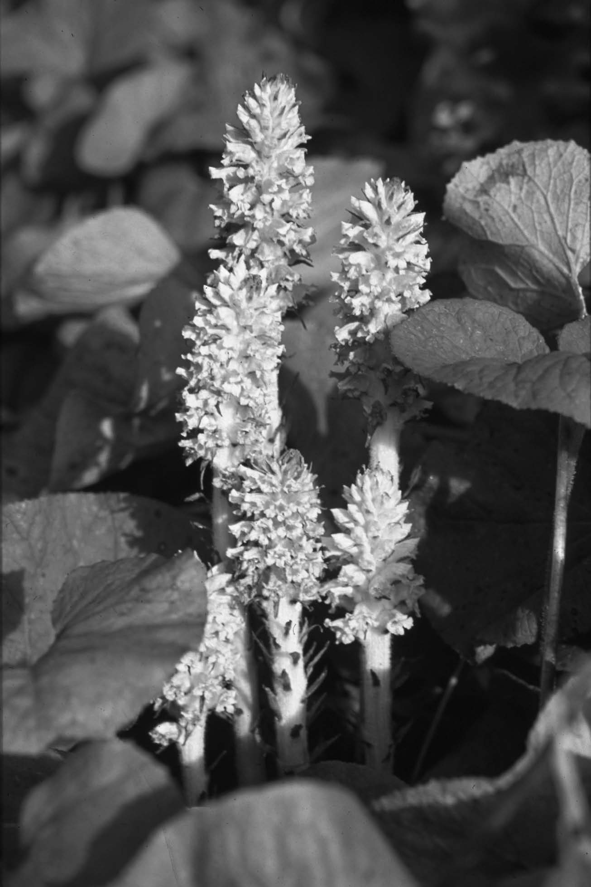
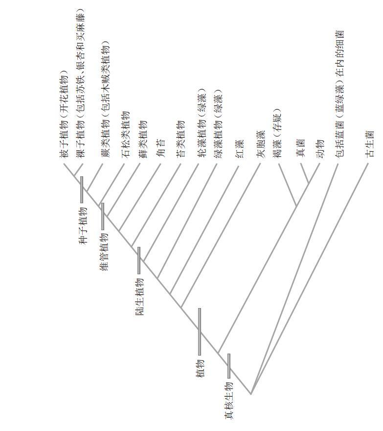
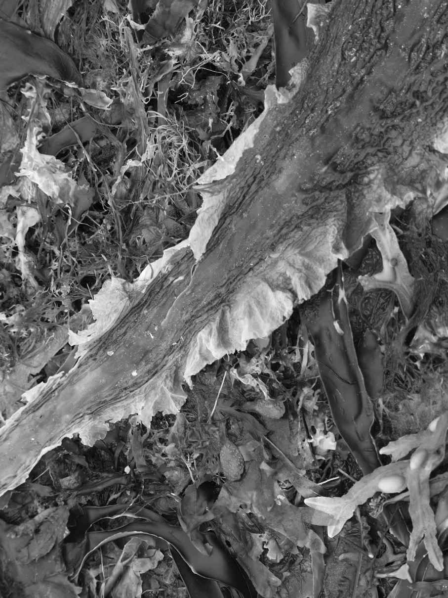
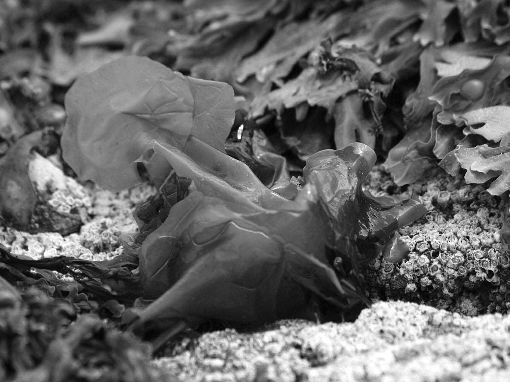

植物和爱情一样，很容易识别，却很难去定义。在英国，人们在许多自然风光优美的景区入口，都可以看到一块要求游客避免“毁坏树木和植物”的标志牌。我们肯定要问上一句，树怎么就不能算作植物。植物通常被简单地解释为一种绿色的、不能移动的有机体，它们能够通过光合作用来养活自己（即自养生物）。这是关于植物的一种启发式定义，我们可以增添更多的描述来对其进行完善。有时，植物被描述为具有以下多种特征的有机体：
1） 含有叶绿体，具有对水和二氧化碳进行光合作用并产生糖的能力；
2） 具有纤维素构成的坚硬的细胞壁；
3） 可将能量存储为碳水化合物或者淀粉；
4） 进行分裂和分化的特殊组织（即分生组织）可持续生长；
5） 细胞中含有相对较大且充满汁液的液泡。
所以，树木显然是植物，而且就算其他有机体缺少上述一种或几种特征，我们也不难将其定义为植物。例如，兰科珊瑚兰属植物春珊瑚根（Corallorhiza wisteriana ）能开出兰花般的花朵，能结出典型兰科植物的微小种子，也具有大多数陆生植物都有的维管组织。但是，这种植物却没有绿色的叶片，因为这种珊瑚兰属于菌根营养植物，它依靠能从森林地被物的腐烂物质中获取能量的真菌而生存。正是与真菌的亲密关系令这种珊瑚兰能够实现这一生存模式，而这也是兰科植物在不同程度上共同具有的特征。与之类似的是生长在牛津地区查威尔河畔的欧洲齿鳞草（Lathraea clandestine ），它的花朵让人联想起毛地黄，但它既没有嫩枝也没有叶片。它的花朵直接从土壤中冒出来，因为这种植物的根能够渗入柳树的根，并从柳树的维管组织中转移营养物质。这两种植物都失去了光合作用的能力，但它们仍然属于植物，因为它们和光合作用植物有许多其他共同特征。
上述植物定义所存在的问题就是过于狭隘，因为它并没有将部分生活在水中的藻类考虑在内。为了给植物一个合理、明确的定义，我们需要考虑生物有机体的分类方式。在生物学中，相似的个体被归为同一个物种，而相似的物种又被归为同一个属，以此类推进而归类为科、目、纲、门、界。这种分类等级中的每一层次都可被称为一个分类单元，而关于分类的研究就是分类学。在19世纪之前，分类学家们尝试创建一种能够揭示造物主计划的自然 分类。而自19世纪起，生物学家们就开始质疑物种是否能通过保留这些变化并将其传递给后代而发生改变和进化。
目前，生物学家们已经进行了大量的工作来构建“生命之树”（或者说是系统发生），以此来展示所有生物体之间的关系。1859年，达尔文发表《物种起源》之后，这项工作便实现了快速启动，而且至今仍在进行。进化树是《物种起源》中的唯一一幅插图，而第一版图书的第13章也对分类学进行了清晰的介绍。达尔文在书中探讨了构建一种自然 分类的可能性，但是如今“自然”意味着进化过程的揭示而非上帝的旨意。目前，分类学的基础在于达尔文所谓的共同祖先学说。一个分类单元中的所有物种只有一个共同的祖先，而且它们就是该祖先的所有后代。如果能够满足这种分类标准，那么该类群便是单系的。从物种到界，单系类群出现在分类的每个层级中。

图1 列当属植物Orobanche flava 是一种寄生植物。寄生植物不能进行光合作用，但可以从其他植物中获取营养
如果我们将38亿年来的物种进化看作一棵分叉树，那么植物就是生命之树上的一组分支，而这组分支都能与同一个分叉点发生联系。当你试图确定究竟是哪个分叉点成为植物的起源时，争论便就此产生了。此时值得一提的是，真菌绝对不是 植物。在生命之树中，真菌实际上是与动物并列的分支。尽管如此，在高校的院系组成中，真菌学家确实比较容易和植物学家（而不是动物学家）归为一类。
无论如何定义，植物的核心无疑是光合作用能力。但不幸的是，有些能够进行光合作用的生物体却并不被看作植物。光合蓝藻就是其中的一员。
目前，人们认为生命只在38亿年前进化过一次。当时，地球作为生物环境与现在截然不同。没有保护性的臭氧层，也就无法吸收来自太阳的有害紫外线。此外，大气中还含有大量的二氧化碳，而氧气成分却很少。
与我们如今所看到的大多数植物相比，最早出现的生物非常简单。首先，它们是单细胞生物，即原核生物。现在仍有许多原核生物存在于古生菌和细菌这两大类生物中。（另一大类生物就是真核生物，即植物、动物和真菌。）人类在距今有近35亿年历史的岩石中发现了原核生物化石。这些早期细菌的化石结构看起来与如今在世界各地多处都能见到的叠层石类似。
叠层石是一种垫形的岩石，见于温暖的浅湖边缘，最常见于咸水湖旁。这种岩石就是（仅仅）由微生物层积堆叠而成的。单细胞的蓝藻菌群漂浮在水上形成了一层黏液膜。碳酸钙沉积在黏液上，蓝藻随之迁移到岩石表面，继而形成一层新的黏液膜。这些交替的岩层和黏液膜逐渐演变成化石，细菌也就被包裹在岩石中。所以很显然，原核生物可能早在38亿年前就已经完成了进化，但想要确定这些早期生物如何获取赖以生存的能量却并不容易。有些生物可能合成了酶来分解矿物质，但这种能量来得太慢。目前已有有力证据表明，这些叠层石化石中的蓝藻能够捕获太阳的能量，并以大气中丰富的二氧化碳为原料来合成有机碳。这一证据基于这样一种事实，即相较于大气中存在的13 C，负责从二氧化碳中捕获碳元素的酶会优先结合碳的另一种同位素12 C。因此，如果碳化合物中含有这两种同位素的比例与大气中不同，那么这些化合物就是光合作用的产物。在格陵兰岛的岩石中所发现的碳化合物就具有光合作用所产生的碳同位素比率。
我们所熟悉的光合生物通常利用水来产生电子，水中的氧气随后以气体的形式释放到大气中。人们认为最早的光合蓝藻可能采用硫化氢（H2 S）而非水（H2 O）来作为光合原料。根据目前的推断，蓝藻在22亿年前产生了大量的氧气并积累在大气中。这件事看起来不起眼，但蓝藻开始利用水作为电子供应这一事实最终导致了大气中氧气水平的上升，从而使得有氧呼吸以及大多数生命的存在成为可能。氧气的产生还有另一重影响，即上层大气中臭氧层的形成。现在臭氧层的缺失已经引起了人们的注意，它的保护作用在生物学上至关重要。在臭氧层出现之前，叠层石中的黏液层可能有助于保护蓝藻，水生环境也能为其提供部分保护作用。
回顾前文，早在20亿年前已有大量的原核生物蓝藻可以通过光合作用产生氧气，但是仍然没有可以称之为植物的生物出现。植物的进化还缺少一件必定发生过我们却并不知晓全过程的事件，那就是第一个真核细胞的形成。真核细胞比原核细胞具有更完善的内部组织，它们具有被膜包裹的细胞器，例如细胞核和线粒体，以及植物所特有的叶绿体。细胞器就是细胞内的小型“器官”，它们在细胞内各自承担着特殊的功能。
科学家们认为，在27亿年前，某种不明单细胞原核生物吞噬了另一种原核生物，但并未将其分解。被吞噬的细胞仍然保留着自身的细胞膜，并将部分（并非全部）基因并入宿主细胞的细胞核中。这种吞噬衍生而来的“合作”关系被称为胞内共生（endsymbiosis）。这种早期真核生物（即原真核细胞）依赖于代谢独立生活的蓝藻的光合产物而生存。胞内共生学说的证据十分简单：细胞器有两层细胞膜——一层属于自己，另一层则属于将其吞噬的宿主细胞。最早发生胞内共生现象的时间推断依据也很简单：所有真核生物的独特特征之一就是能产生甾醇。在真核生物死亡并被分解后，甾醇便被转化为甾烷，并在岩石中存留很长时间。拥有27亿年历史的岩石中含有甾烷，所以其中也有少量的死亡真核生物，但是并没有完整生物体的化石。
多年之后，真核生物的多样性增加导致进化谱系产生了许多其他物种（包括现存物种和灭绝物种），但没有植物。然而，在吸收了一种原核生物之后，原真核细胞又吸收了另一种原核生物，而这次的原核生物是一种光合蓝藻细菌。和之前一样，被吞噬的生物体成了一种细胞器，而部分（并非全部）基因也并入了宿主细胞的细胞核。和之前一样，这种细胞器也具有双层膜结构，它就是我们如今所知的叶绿体。
疑似真核生物结构的最古老的化石证据存在于一块21亿年前的岩石中。这种名为卷曲藻（Grypania spiralis ）的生物已没有现存的后代。它看起来有点像是一种藻类，所以人们认为（或是希望）它可以进行光合作用。这种生物的直径有2毫米，其体积大到足以成为现今部分藻类的祖先，但我们无法证明它就是这些藻类的祖先。就现存分类单元中的光合真核生物而言，第一块无可争议的化石发现于12亿年前的岩石中。这种名为Bangiomorpha pubescens 的生物是一种红藻，并且因其与现存的红藻头发菜（Bangia atropurpurea ）相似而得名。除了外形类似之外，这两种红藻还具有相同的栖息地——陆地边缘和水域。
Bangiomorpha 的重要性还有另一层原因：作为目前已知最古老的多细胞真核生物，其细胞不仅具有特定功能，而且其中一种功能就是进行有性生殖。在生命之树的不同分支中，多细胞化是不止发生过一次进化的重要生物学事件之一。动物与植物距今最近的共同祖先是单细胞生物，但现在这两类生物中都是由多细胞生物占主要地位。
Bangiomorpha 化石结构的良好程度使得人们有可能重现它的生命周期，而且它与部分红藻的生命周期非常类似。在这类植物中，孢子萌发并生长为多细胞体。孢子只含有一组染色体（也就是说孢子是单倍体），所以藻类植物是单倍体。这种植物的基部具有固着器，可以令植物体紧紧附着在岩石上。植物体的顶端则变得扁平，这样它在向上生长的过程中就能捕捉到更多阳光。原植体中的部分细胞分化为单倍体配子，这便是有性生殖的先决条件之一。
大约在21亿年前到12亿年前之间，最早的光合真核生物出现了。这些生物也是最早的一批植物，生命之树这一分支上后来出现的每一种生物都是植物。定义了植物分支的这两次胞内共生事件只发生过一次，也被看作最早的胞内共生现象。人们已经从DNA序列的分析中获得了证据。这种技术自1993年来已成为解决此前各种复杂的进化问题的重要手段。
正如本书所述，植物是单系类群。有趣的是，人们越来越明确地发现，还发生了一种次生的胞内共生，其中有些真正的植物被并入非植物生物，由此而产生的生物体也不属于植物。其中我们最熟悉的或许就是海带等褐藻。所以说，在海滩观察潮水退去后留下的“海草”，其中红红绿绿的是植物，而褐色的那些则是动物。

图2 植物生命进化树
在生命之树中，植物分支里最低的侧支由非常古老（至少12亿年）、非常稀少（13个物种）、非常微小（显微级别）的淡水藻类组成：灰胞藻属、蓝载藻属和灰粘毛藻属——这三个属统称为灰胞藻。在系统发生树上，最低分支中的生物与其他生物相比发生了最低程度的改变。这并不意味着它们看起来与最早的祖先完全一样。人们已经具有证明其基础地位的双重证据。首先，除了包裹叶绿体的双层膜外，灰胞藻的叶绿体还具有肽聚糖层。它与细菌的被膜类似，为了与其他植物的叶绿体相区别，人们通常将灰胞藻的叶绿体称为蓝色小体。这种肽聚糖层仅存在于灰胞藻中，由此推断它在植物进化的早期就消失了。其次，灰胞藻的质体中存在一种称为藻胆素的色素。质体是植物用于生产或储存重要化学物质的细胞器。藻胆素仅存在于蓝菌、灰胞藻和红藻中，而红藻正属于植物分支中的下一个侧支。在这三种生物中，藻胆素于藻胆体内相结合。除藻胆素外，它们也都含有叶绿素a。
进化植物学家对灰胞藻很感兴趣，因为这一小类植物被看作最接近于原始内共生体的现存物种。在灰胞藻中，有些物种可以移动但有些不能，有些物种具有纤维素细胞壁而另外一些没有。在这类植物中，有性生殖尚不清楚。DNA序列分析所得出的结果与形态学证据相吻合，这些微观植物显然成了植物生命进化树中最古老分支之名的有力竞争者。下一个侧支就是红藻。需要再次强调的是，“藻类”这种通俗说法可用于概括一组生物，其中有些是植物（红藻和绿藻），另外一些则不是植物（蓝绿藻和褐藻）。
这一分支中的物种数量大约在5 000 ～ 6 000种之间，或许能多达10 000种，其中只有一小部分生活在淡水中。红藻和灰胞藻具有许多共同特征，这些特征在随后的进化中丢失了，所以并不存在于其他植物中。这些共同特征包括藻胆素、藻胆体以及仅含有叶绿素中的叶绿素a。这些色素，而不是叶绿素，赋予了这些植物与众不同的红色。红藻也具有其他共性特征，比如以糖原（或红藻淀粉）的形式储存能量。糖原是由多个葡萄糖聚合而成的带有支链分子的大分子物质。有些物种可以分泌碳酸钙，而碳酸钙对于珊瑚礁的形成至关重要，因此这些物种也被称为珊瑚藻。所有的红藻都具有双层细胞壁。外层细胞壁因其可制成琼脂、用途广泛（包括可用于烹饪）而具有重要的经济价值。内层细胞壁则和大多数植物一样，部分由纤维素组成。
正如人们所料，红藻这种物种丰富的分类单元，其多样性也十分丰富，但它们的生命史都有着共同的模式。然而，这种模式非常复杂，并且与我们最熟知的哺乳动物的生命周期截然不同。这些熟知的内容会加深我们对植物繁殖的成见和假设，这种障碍也会让我们对植物生命史的理解比实际需要的困难得多。
第一种错误的假设是，每种 自由生物都和人类一样需要两组完整的染色体。这种观点是错误的，我们已经介绍过，化石物种Bangiomorpha 的生命大多以单倍体的形式存在，而并非具有两组染色体的二倍体。人们很容易产生疑问，二倍体或者单倍体是否具有优势或劣势呢？单倍体形式的生命存在一个问题，那就是任何有害突变都会表达出来，而生物体有可能因此死亡。所以，基因拥有两套副本似乎更好，因为有害突变的损害可以被良好的基因副本所压制，或者说基因的两种副本的结合或许要比单个更有优势。然而，这也是把双刃剑，因为这意味着二倍体细胞可以累积许多潜在的严重危害突变。但是，考虑到生命之树中的大多数分类单元都具有二倍体的进化趋势，这似乎是一种更稳定的进化策略。尽管如此，我们也无法否认单倍体并没有妨碍许多分类单元成功地存活了数亿年。这些类群包括红藻、绿藻、藓类植物、苔类植物和蕨类植物。
第二种错误的假设是，在生物体的生命早期阶段，有一类细胞（生殖细胞系）会负责形成配子，即精子和卵细胞。对哺乳动物以及许多其他动物而言，这种观点是正确的，但植物并非如此。通常来说，植物的发育以及植物细胞的分化是非常灵活的，当然不是早在胚胎阶段就决定好的。当园丁扦插枝条，或者毛地黄等二年生植物由营养生长转为开花结果时，这一结论就显而易见了。植物并没有生殖细胞系。相反，单倍体植物的生命史具有一个独特且有限的阶段，供其产生精子和/或卵细胞。由于这些植物已经是单倍体了，所以它们不需要在配子形成之前通过分化和有丝分裂将染色体的数目减半（有丝分裂是指染色体数目保持不变并产生两个相同细胞的细胞分裂）。生命史中的单倍体阶段可以产生配子，因此称其为配子体，而配子体（gametophyte）的词根“-phyte”就来自古希腊词语φυτóν（植物）。
第三种错误的假设是，二倍体植物会通过减数分裂过程产生单倍体配子（减数分裂是指染色体数目减半的细胞分裂）。其实读完上一段介绍，这种假设已经错误得很明显了。事实上，二倍体植物会通过减数分裂产生单倍体孢子。不出所料，生命史中可以产生孢子的二倍体阶段被称为孢子体。这些单倍体孢子会生长成单倍体的配子体，这段生命史便不断循环。因此，植物的生命史由依次交替的阶段或者说世代所组成，即单倍体世代和双倍体世代交替存在。植物通常具有世代交替现象。
红藻（或它们的祖先）是最早进行有性繁殖的植物，这里值得一提，以便随后的内容更容易理解。接下来我们要介绍的是绵毛多管藻（Polysiphonia lanosa ）的生命史。曾在英国和爱尔兰海岸的潮间带探索岩石潮水潭的人对这种红藻可能非常熟悉。这一物种生长在泡叶藻（Ascophyllum nodosum ）的外侧，而泡叶藻是一直到欧洲西海岸和北美的东北海岸都广泛存在的一种褐藻（不是植物）。绵毛多管藻很可能是泡叶藻的一种附生植物，但有人记录称前者实际上会渗入后者，这样的话多管藻就是一种寄生植物。生长在泡叶藻表面的绵毛多管藻看起来就像是拉拉队员手中的花球。
绵毛多管藻的植物体可能是雄配子体或雌配子体，但它们看起来非常相似。雄配子体会产生雄配子，我们称之为不动精子，因为这种雄配子不具有鞭毛或尾部，无法自由游动。不动精子被释放到植物周围的水中，希望能够遇到雌配子体。雌配子体会产生（但并不释放）雌配子，雌配子会保留在一个叫果胞的结构内，而果胞由雌配子和受精丝组成。受精丝是一处细长的凸起，其功能就是捕捉路过的不动精子。一旦被捕获，不动精子就会将自己的细胞核献给雌配子体，从而形成合子这种二倍体细胞。

图3 褐藻、红藻和绿藻通常一起被冲上海滩，但只有红藻和绿藻属于植物
合子会封闭在单倍体的雌配子体内并发育成二倍体结构，也因此完全寄生于雌配子体。这种二倍体结构被称为果孢子体，由此我们也能推断出，这种疱状突起会产生二倍体的果孢子。果孢子被释放到水中，四处漂流并希望着落在合适的基质上，对于绵毛多管藻而言，这种基质当然就是泡叶藻的叶状体。二倍体的果孢子萌发并生长为二倍体的四分孢子体。而徒劳无益的是，四分孢子体与配子体非常相似，尽管前者是二倍体而后者是单倍体。当一个物种的单倍体世代和二倍体世代非常相似时，我们称这种现象为同形。当两种世代形态不同时，我们便称之为异形。有些红藻是同形的，而有些红藻是异形的。
四分孢子体成熟后，在其枝的顶端会形成四分孢子囊。四分孢子囊是单倍体四分孢子的形成之处，如此命名是因为它们是以四分体的形式形成的。也就是说，四分孢子囊呈三棱锥形排列，彼此互相依附。这些单倍体孢子是由二倍体植物生成的，所以它们正是减数分裂时染色体数目减半的结果。四分孢子被释放后，有幸碰到泡叶藻的叶状体便附着下来。这就是绵毛多管藻的完整生命史。
红藻的内部结构和它们的生命周期一样复杂多变，但我们可以拿绵毛多管藻作为例子来看。在每个枝上，罐状细胞沿着中心轴拉长排布并且首尾相连。这些细胞通过细胞分化过程中形成的纹孔所连接。与这些连接有关的是纹孔塞，后者能在某个细胞死亡后将连接密封起来。细胞内连接是多细胞体的重要组分之一。中心轴细胞周围排布着一层轴周细胞。这些细胞与每个中轴细胞的长度相当并与其对齐，从而使得这种植物的枝看起来像是一系列重复单元。轴周细胞周围可能还有一层更外围的细胞，被称为皮层细胞。
绿藻属于非常多样且更加庞大的一类植物，这类植物被简单地称为绿色植物。人们目前认为，绿色植物都是由同一个祖先进化而来。它们具有许多共同特征，包括叶绿素的两种形式（叶绿素a和叶绿素b）以及由纤维素组成的细胞壁。大多数绿色植物都是陆生植物，其余的就是绿藻。
“藻类”这种通俗说法可用于概括多种生物，其中有些是植物（红藻和绿藻），另外一些则不是植物（褐藻）。“绿藻”这种说法也是一样，它可以指代并不具有相同祖先的两类不同的生物。在进化树中，绿藻有两个分支：绿藻植物和轮藻植物。这些植物的进化以及不同物种之间的关系尚未被完全了解；实际上，这还有一点神秘，因为在过去的二十年里，陆生植物比藻类植物受到了更多的关注。然而，其中一个分支的物种丰富程度相对而言要少得多，那就是包括轮藻目在内的轮藻植物。可以说，这类数目更少的植物的地位更加重要，因为它们是如今主导世界的陆生植物的姊妹群。
与其尝试对绿藻做出全面的总结陈述，我们不如详细介绍几个物种来阐释绿藻的多样性。绿藻生活在淡水和 海水中。其中许多物种都是单细胞生物，但有些绿藻是丝状体，有些绿藻则会在某些阶段是单细胞生物，但随后发生细胞分化现象并形成多细胞集落。团藻（Volvox carteri ）就是后者的典型代表之一。有些藻类会与一种叫作地衣的真菌形成共生关系。尽管没有真菌这些藻类也能生存下去，反之却并非如此，所以地衣是凭借真菌而不是藻类的身份而被人知晓的。此外，一种藻类还能与多种不同的真菌形成共生关系。（地衣并不是 植物。）
许多人见到的第一类绿藻是衣藻（Chlamydomonas ），因为它会生长在学校的池塘里。与团藻以及接下来即将介绍的石莼一样，衣藻这种单细胞生物也属于绿藻植物。衣藻有两条鞭毛，它是被广泛用于研究鞭毛运动的“模式生物”。成熟的衣藻是单倍体，只具有一组染色体。衣藻细胞可通过简单的有丝分裂进行无性生殖。在形成新的个体之前，衣藻细胞会失去鞭毛并聚集起来，继而以一种不协调的方式发生分裂，产生新的单细胞个体。
然而，成熟的衣藻细胞也可以分化形成配子。在某些物种中，雄配子和雌配子大小相同（同配生殖），但在另外一些物种中，雌配子要更大些（异配生殖）。两种配子在水中发生融合，形成二倍体的合子，合子被厚厚的细胞壁包裹住，起到良好的保护作用。这一接合孢子可以适应恶劣的条件，但当它感到条件适宜时，就会发生有丝分裂，每个接合孢子释放出四个新的成熟个体，这就是完整的衣藻生命史。
衣藻和我们接下来将要介绍的团藻同属于一个目。和衣藻一样，团藻也已经被研究得十分透彻，因为团藻能够以单细胞形态或者是上千个细胞组成的球形群落而存在。因此，如果你想要研究多细胞生物的进化，团藻是一种非常合适的研究对象。在植物中，团藻已经进化过许多次了，就更不用说独立于植物和动物的时候了。
所以，单细胞的团藻可以聚集起来形成群落，几千个细胞嵌在糖蛋白的胶状球体（即定形群体）外侧，而球体直径可达到1毫米。这种群落作为集体而存在，每个细胞的鞭毛进行协调的运动，推动球体朝着光的方向移动。有时细胞质的联络索可以将细胞连接起来。团藻细胞可通过眼点感受光线，这些眼点通常分布在球体的单侧，我们可以借此区分球体的前面和背面（或者说前极和后极）。当部分细胞开始发生不对称分裂并形成大小两种细胞时，这种协同合作的细胞群落就能演变成真正的多细胞生物。分裂而来的两种新细胞无法独立存在。较小的细胞是体细胞，功能是依靠其鞭毛推动球体。而较大的细胞是生殖胞，它们积聚在球体的后极，分裂并形成子群落。这些新生成的群落最初就保留在定形群体内，鞭毛朝向球体内侧，但当母体破裂并将子体释放后，子体中的细胞会重新定向，使鞭毛朝向球体外侧。这就是完整的营养生殖过程。非常奇怪的是，在子体从母体中被释放出来之前，子体内有时就已经形成下一代子体了。
团藻的有性生殖也与衣藻不同。有些物种的群落可以同时产生精子和卵子（雌雄同体），而有些物种群落只能产生精子和卵子中的一种（雌雄异体）。（值得注意的是，这与二倍体植物的雌雄同株/异株的概念不同，后者是相对于双性二倍体植物而言的。）有性生殖开始时，群落中的部分生殖细胞要么 开始产生被释放的精子，要么 发育成保留在母体内的卵子。精子产生在精子包中，这种精囊会从母体中释放出去。已有部分证据表明，精子包会释放一种信息素，使得其他群落处于性活跃状态。当精子遇到卵子并成功使其受精后，二者会融合成包裹着合子的具有厚壁的孢子。这种二倍体孢子被称为减数分裂孢子，它能适应各种恶劣条件，但在适宜的环境下会发生减数分裂并释放单倍体的后代。
对于那些在世界温带地区海岸进行岩石潮水潭探索的人来说，比较熟悉的绿藻就是海莴苣，即石莼（Ulva lactuca ）。这种看起来略显肮脏的植物可以凭借圆形的固着器固着在岩石上，也可以自由地漂移。除固着器外，植物体最多有餐盘大小，并且是仅有两层细胞厚度的叶状体，这使其非常容易损坏，所以它固着在岩石上时经常会被海浪击破。然而，当它生活在水中时，这种形态能令其漂浮在水上，所以这并不是个问题。叶状体中的每层细胞都是随机排布的，所有细胞都能发生分裂。这意味着，这种植物并不存在开花植物中所谓的分生组织。石莼的每个个体细胞之间毫无连接，在有些人看来这仅仅是一个群落。这种看法过于简化了，因为石莼实际上非常有条理，它就像多年生草本植物一样，在每年春天或者是叶状体脱落的时候能够从固着器上重新生长起来。在实验室条件下，科学家们发现脱落的叶状体可以形成新的植物体，但这种情况不知能否在自然环境下发生。

图4 海莴苣是英格兰海滩上最常见的绿藻之一
与所有的性活跃植物一样，石莼的生命史也在单倍体世代和二倍体世代间发生交替。生命之树在此处的转折在于，石莼的单倍体和二倍体世代因外观相同而被称为同形。单倍体植物可产生配子，其间配子体叶状体边缘的细胞可以分裂并分化成有两个鞭毛的精子或卵子。除了卵子更大一些外，二者在形态上非常相似。雄配子和雌配子都能进行光合作用，并朝着光源游动（正趋光性）。这意味着配子可以游动到水面上。我们目前认为，鞭毛的作用不止是提供游动的动力；鞭毛不仅与性别身份有关，而且一旦发现了另一性别的配子后，鞭毛还能促进黏附。两种性别的配子在鞭毛基部都有眼点。两种配子的区别在于，雌性卵子的眼点叶绿体外膜上有5 500个颗粒，而雄配子只有4 900个颗粒。两种配子结合后，新生成的合子具有四个鞭毛并且呈负趋光性，这意味着它会游离水面，潜至水底的岩石上，在那里生长出固着器以及新的叶状体，只是这样的叶状体和固着器是双倍体。
发育成熟后，孢子体的双倍体叶状体会从边缘处产生单倍体孢子。这是减数分裂中染色体减半的结果。这些游动孢子（和合子一样）都具有四条鞭毛并且呈负趋光性。同样和合子一样的是，眼点外膜上共有11 300个颗粒，有些人认为这与趋光性有关。游动孢子继而会生长成一个固着器和一个雄/雌配子体。在苏格兰，海莴苣从海边采回来后会被做成汤和沙拉食用，而在日本则用于制作寿司。
就物种数量而言，轮藻植物比绿藻植物的群体小得多。在学生时代，我们可能会对其中一种轮藻植物十分熟悉。水绵（Spirogyra ）是生活在淡水池塘里的丝状藻类。水绵通常生活在水下，但天气暖和时，快速的生长以及大量的有氧光合作用会让其在水面上长出泡沫状的黏糊糊的一片。在一年中的任何时候，我们都很容易因水绵的叶绿体呈拉紧弹簧般的分布将其鉴别出来。圆柱状细胞连接起来构成丝状体，单个丝状体可能达到数厘米长。水绵的细胞壁有两层：外层细胞壁由纤维素构成，而内层细胞壁由果胶构成。丝状体可断裂，但由于两部分短丝可分别长成新的植株，所以这本质上属于一种无性生殖。
成熟的水绵植株的每个细胞都是单倍体，所以这是一种配子体。有性生殖十分简单，可分为两种情况。在第一种情况中，两个不同的丝状体并行靠近。每个丝状体中的细胞都会生长出管子，管子顶端融合，在两个丝状体的两个细胞间形成一个接合管。雄细胞的内含物会迁移到雌细胞中，这就是核融合，由此二倍体合子形成并作为游动孢子释放出去。这个过程被称为梯形接合，因外形很像梯子而得名。另一种情况被称为侧面接合。当同一个丝状体的相邻细胞间形成接合管时便属于侧面接合。而后便和梯形接合一样，雄细胞的内含物迁移到雌细胞中，形成并释放二倍体的游动孢子。游动孢子继而发生减数分裂，形成四个单倍体细胞，再形成新的配子体丝状体形式。
本章的最后一个例子，第二种轮藻植物就是轮藻属（Chara ）本身。这种多细胞植物生长在北半球温带地区的淡水池中。概括地说，这种植物的外形类似于其他水生植物（例如金鱼藻，见第五章）和部分陆生植物（例如木贼和牛筋草），但它与二者的亲缘关系并不紧密。轮藻具有丝状的中央茎，茎上有规律地间隔排列的节上长有轮生的枝。这种植物可能会自由地漂浮，但它也会通过根茎生长到池塘底部的淤泥中。茎顶端的细胞会发生分裂，位于上方的子细胞继续维持顶端细胞的功能。植物体的顶端细胞就是指每个尖端的细胞。位于下方的子细胞会发育成节细胞或节间细胞。轮生的枝就是从节细胞中生长出来的。枝要么短型且有限生长，要么长型且无限生长。
轮藻属于单倍配子体。这种植物会产生活动精子并将其释放到水中。雌配子并不会被释放，而是在配子体上维持其结构。就此形成的二倍体合子便可以——或许在我们看来应该——和石莼一样生长成二倍孢子体。然而，轮藻并不是人类，其合子直接发生减数分裂并产生了四个单倍体孢子。这些孢子漂走并首先发育成丝状的原丝体，继而再发育成更多成熟的单倍体配子体。
所以绿藻由两种独立的类别组成：绿藻植物和轮藻植物。它们并不是拥有同一个独特祖先的单系类群；准确地说，它们是生命之树枝干上的相邻分支。在生命之树的这一枝干上还余留着一个更大型的类群，它与轮藻植物拥有着独特的共同祖先。这个类群非常庞大，由大约40万个物种组成。我们对这个植物类群非常熟悉，因为它就是陆生植物。这些植物可以追溯到同一个独特且未得到鉴定的祖先，后者积累下许多特征的新组合，令其能够在脱离水环境的大多数时间里存活下来。这个祖先就是曾经的第一种陆生植物，没有这个祖先，就不会有我们现在知道的陆地生态系统，当然也不会有智人（Homo sapiens ），不会有牛津大学出版社，不会有关于植物的这本通识读本。下一章讲述的便是陆生植物。